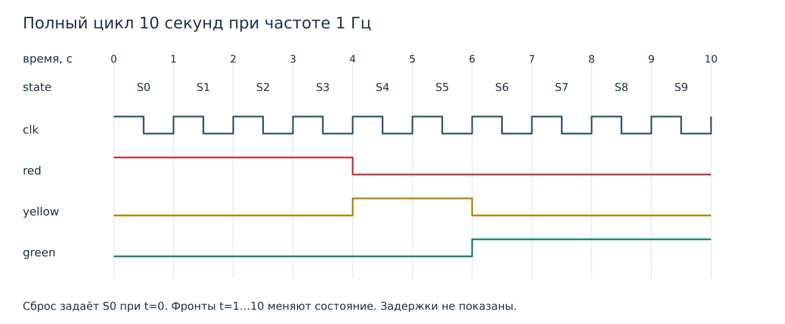
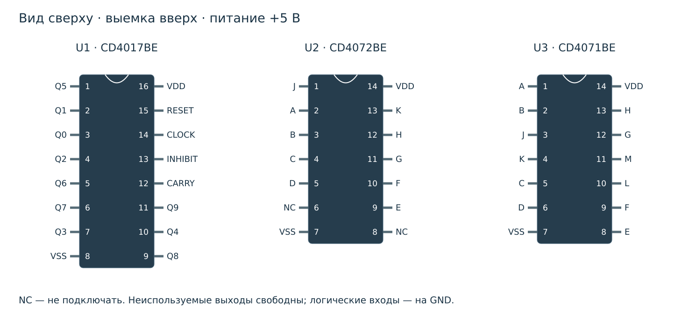
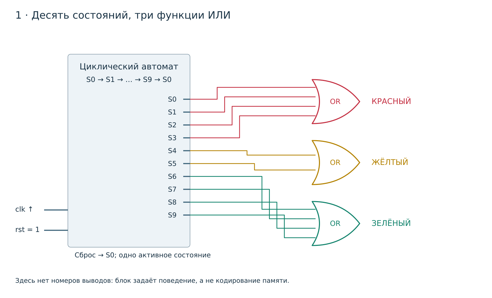
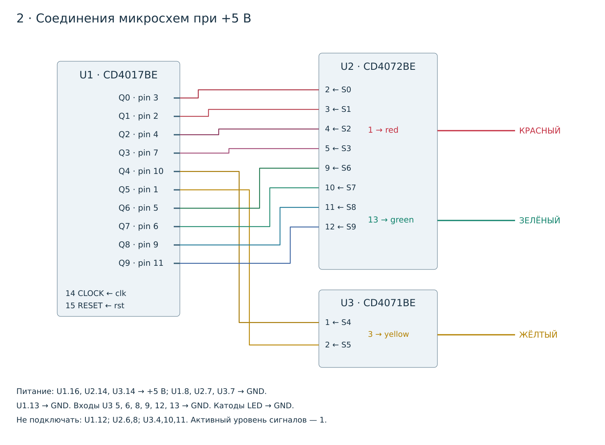
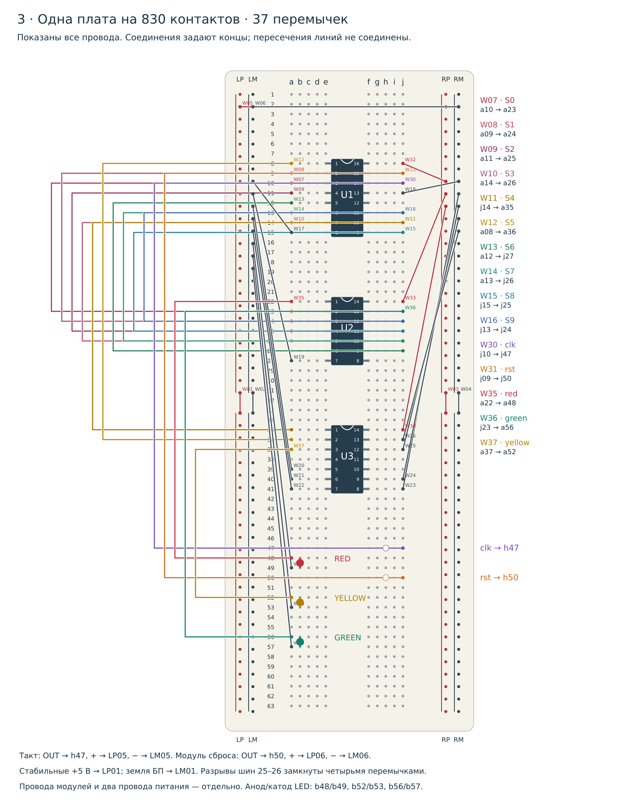

1. Упражнение BB-FSM-01 · Светофор Тимофея
Светофор — удобный первый конечный автомат: выходы зависят от сохранённого состояния, а каждый фронт такта переводит автомат в следующее состояние. Здесь повторяется последовательность красный → жёлтый → зелёный → красный. Красному отведены четыре состояния, жёлтому два, зелёному четыре.
Это реализация идеи Тимофея Никифорова из курса Юрия Панчула. Та же структура «регистр состояния + дешифрация выходов» встречается в контроллерах периферии, автоматах протоколов и управляющей логике процессоров. Упражнение связывает схему на макетной плате с синтезируемым RTL.
Что нужно знать: шины питания макетной платы, нумерацию выводов DIP, функцию ИЛИ и фронты такта. Здесь изучается заданная последовательность; согласование перекрёстка и входы пешеходов в упражнение не входят.
2. Автомат состояний и логика ИЛИ
S0 → S1 → S2 → S3 → S4 → S5 → S6 → S7 → S8 → S9 → S0
red = S0 | S1 | S2 | S3
yellow = S4 | S5
green = S6 | S7 | S8 | S9S0–S9 — имена состояний и дешифрированных сигналов, а не номера выводов микросхемы. В установившемся состоянии ровно один сигнал S равен 1. В источнике «выходы 1–4, 5–6, 7–10» перечислены с единицы; здесь последовательно используются обозначения Q0–Q9 из даташита.
| Состояние | Выход U1 / вывод | red | yellow | green | Следующее по clk ↑ |
|---|---|---|---|---|---|
| S0 | Q0 / 3 | 1 | 0 | 0 | S1 |
| S1 | Q1 / 2 | 1 | 0 | 0 | S2 |
| S2 | Q2 / 4 | 1 | 0 | 0 | S3 |
| S3 | Q3 / 7 | 1 | 0 | 0 | S4 |
| S4 | Q4 / 10 | 0 | 1 | 0 | S5 |
| S5 | Q5 / 1 | 0 | 1 | 0 | S6 |
| S6 | Q6 / 5 | 0 | 0 | 1 | S7 |
| S7 | Q7 / 6 | 0 | 0 | 1 | S8 |
| S8 | Q8 / 9 | 0 | 0 | 1 | S9 |
| S9 | Q9 / 11 | 0 | 0 | 1 | S0 |
Двухвходовый ИЛИ даёт 1, когда хотя бы один вход равен 1:
| A | B | A | B |
|---|---|---|
| 0 | 0 | 0 |
| 0 | 1 | 1 |
| 1 | 0 | 1 |
| 1 | 1 | 1 |
Для четырёхвходового ИЛИ комбинация 0000 даёт 0, а остальные пятнадцать комбинаций дают 1. Сброс асинхронный, активный высокий: он сразу выбирает S0, в том числе между фронтами. Обычный счёт идёт только по положительным фронтам такта.



При частоте f длительности равны 4/f, 2/f и 4/f секунды. На диаграмме сброс задан при t=0, первый счётный фронт — при t=1 с. Если отпустить реальный асинхронный сброс в произвольный момент, первый красный интервал может быть короче; последующие полные циклы сохраняют отношение 4/2/4.
Попробуйте последовательность состояний
Анимация показывает логические состояния; это не HDL-симулятор и не электрическая модель.
3. Необходимые компоненты
| Поз. | Компонент | Кол. | Назначение | Строка LSSK |
|---|---|---|---|---|
| U1 | CD4017BE · DIP-16 | 1 | Десятичный счётчик, десять дешифрированных выходов | 37 |
| U2 | CD4072BE · DIP-14 | 1 | Два элемента 4ИЛИ: красный и зелёный | 21 |
| U3 | CD4071BE · DIP-14 | 1 | Один элемент 2ИЛИ для жёлтого; три не используются | 20 |
| LED-R | Светодиод на 5 В | 1 | Красный, со встроенным ограничением тока | 46 |
| LED-Y | Светодиод на 5 В | 1 | Жёлтый, со встроенным ограничением тока | 48 |
| LED-G | Светодиод на 5 В | 1 | Зелёный, со встроенным ограничением тока | 47 |
| CLK | Тактовый модуль 555 | 1 | Готовый модуль; настроить примерно на 1 Гц | 54 |
| RESET | Кнопочный модуль | 1 | Модуль на 5 В: OUT=0 отпущена, OUT=1 нажата; встроенная подтяжка к земле | 65 |
| BB | Макетная плата на 830 контактов | 1 | Одна плата, центральный разрыв и четыре шины питания | 45 |
| PSU | Модуль стабилизированного питания 5 В | 1 | Выбрать 5 В; использовать поддерживаемый USB-вход или источник 9 В из таблицы | 56 |
| W | Провода M–M | 39 | 37 перемычек платы и два провода питания; взять упаковку 40 шт. | 70 |
| M | Провода M–F | 6 | По три для CLK и RESET с установленными штырьками | 71 |
Номера строк относятся к локальному снимку LSSK от 14 октября 2026 года. Во время обновления Google-таблица не открывалась. Указано число реально используемых компонентов; закупочная упаковка кнопок содержит пять штук. Для модуля питания нужен совместимый входной кабель и источник; они не входят в 39 проводов M–M. Вместо модуля можно взять готовый лабораторный источник 5 В.
4. Микросхемы CMOS: функции, выводы и полярность
U1 CD4017BE: циклически выбирает Q0…Q9. CLOCK, вывод 14, продвигает счёт по положительному фронту при нуле на INHIBIT, выводе 13. RESET, вывод 15, активен единицей и имеет приоритет над счётом. Перенос на выводе 12 равен 1 в S0…S4 и 0 в S5…S9; здесь он не используется.
У второго тактового входа есть особенность: спад INHIBIT при высоком CLOCK тоже продвигает счёт. В нашей схеме INHIBIT постоянно соединён с GND. Модель и тест микросхемы проверяют это поведение; внешнему интерфейсу упражнения нужны только clk и rst. Даташит TI; Таблица тактирования семейства 4017.
U2 CD4072BE: два четырёхвходовых ИЛИ. Входы 2,3,4,5 → выход 1 (красный); входы 9,10,11,12 → выход 13 (зелёный). U3 CD4071BE: четыре двухвходовых ИЛИ. Входы 1,2 → выход 3 (жёлтый). Используемые логические выходы активны единицей. Даташит TI на ИЛИ.



U1 · CD4017BE
| Вывод | Сигнал микросхемы | В этой схеме |
|---|---|---|
| 1 | Q5 | S5 |
| 2 | Q1 | S1 |
| 3 | Q0 | S0 |
| 4 | Q2 | S2 |
| 5 | Q6 | S6 |
| 6 | Q7 | S7 |
| 7 | Q3 | S3 |
| 8 | VSS | Соединить с 0 В |
| 9 | Q8 | S8 |
| 10 | Q4 | S4 |
| 11 | Q9 | S9 |
| 12 | CARRY | Не подключать |
| 13 | INHIBIT | Соединить с 0 В |
| 14 | CLOCK | clk |
| 15 | RESET | rst |
| 16 | VDD | Питание +5 В |
U2 · CD4072BE
| Вывод | Сигнал микросхемы | В этой схеме |
|---|---|---|
| 1 | J | red |
| 2 | A | S0 |
| 3 | B | S1 |
| 4 | C | S2 |
| 5 | D | S3 |
| 6 | NC | Не подключать |
| 7 | VSS | Соединить с 0 В |
| 8 | NC | Не подключать |
| 9 | E | S6 |
| 10 | F | S7 |
| 11 | G | S8 |
| 12 | H | S9 |
| 13 | K | green |
| 14 | VDD | Питание +5 В |
U3 · CD4071BE
| Вывод | Сигнал микросхемы | В этой схеме |
|---|---|---|
| 1 | A | S4 |
| 2 | B | S5 |
| 3 | J | yellow |
| 4 | K | Не подключать |
| 5 | C | Соединить с 0 В |
| 6 | D | Соединить с 0 В |
| 7 | VSS | Соединить с 0 В |
| 8 | E | Соединить с 0 В |
| 9 | F | Соединить с 0 В |
| 10 | L | Не подключать |
| 11 | M | Не подключать |
| 12 | G | Соединить с 0 В |
| 13 | H | Соединить с 0 В |
| 14 | VDD | Питание +5 В |
Неиспользуемые логические входы U3 (5,6,8,9,12,13) соединены с GND. Неиспользуемые выходы (4,10,11) свободны. Выводы 6 и 8 U2 имеют обозначение NC и остаются свободными. Не соединяйте выходы друг с другом вместо элемента ИЛИ.
5. Схема 1 · Логические элементы



Эту поведенческую структуру реализует traffic_light.sv. Блок состояний задаёт последовательность из десяти состояний, а не конкретное внутреннее кодирование.
6. Схема 2 · Соединения микросхем



red — U2.1, yellow — U3.3, green — U2.13. Соедините каждый выход с анодом соответствующего индикатора с ограничением тока; катоды — с общей GND. Тактовый модуль, сброс и источник питания имеют общую землю.
7. Схема 3 · Сборка на макетной плате



Установите все DIP-корпуса поперёк центрального разрыва, выемкой вверх: U1 в строках 8–15, U2 в 22–28, U3 в 35–41. Вывод 1 находится в столбце e первой строки; противоположный верхний вывод — в f. В каждой строке соединены a–e и отдельно f–j; эти половины не соединены друг с другом.
LP/LM — левая положительная шина и земля; RP/RM — правые. Отверстия шин нумеруются 01–50 сверху вниз независимо от 63 строк контактных полей. На рисунке принят разрыв между отверстиями шин 25 и 26; все четыре разрыва замкнуты. Перед использованием этой нумерации проверьте соединения своей платы.
| Внешнее соединение | Отверстия платы |
|---|---|
| CLK: OUT / + / − | h47 / LP05 / LM05 |
| RESET: OUT / + / − | h50 / LP06 / LM06 |
| Питание +5 В / GND | LP01 / LM01 |
| Красный LED анод / катод | b48 / b49 |
| Жёлтый LED анод / катод | b52 / b53 |
| Зелёный LED анод / катод | b56 / b57 |
Полная таблица соединений по отверстиям (37 перемычек)
| Провод | Цепь | Откуда | Куда |
|---|---|---|---|
| W01 | +5V | LP25 | LP26 |
| W02 | GND | LM25 | LM26 |
| W03 | +5V | RP25 | RP26 |
| W04 | GND | RM25 | RM26 |
| W05 | +5V | LP02 | RP02 |
| W06 | GND | LM02 | RM02 |
| W07 | S0 | a10 | a23 |
| W08 | S1 | a09 | a24 |
| W09 | S2 | a11 | a25 |
| W10 | S3 | a14 | a26 |
| W11 | S4 | j14 | a35 |
| W12 | S5 | a08 | a36 |
| W13 | S6 | a12 | j27 |
| W14 | S7 | a13 | j26 |
| W15 | S8 | j15 | j25 |
| W16 | S9 | j13 | j24 |
| W17 | GND | a15 | LM08 |
| W18 | GND | j11 | RM08 |
| W19 | GND | a28 | LM09 |
| W20 | GND | a39 | LM10 |
| W21 | GND | a40 | LM11 |
| W22 | GND | a41 | LM12 |
| W23 | GND | j41 | RM09 |
| W24 | GND | j40 | RM10 |
| W25 | GND | j37 | RM11 |
| W26 | GND | j36 | RM12 |
| W27 | GND | a49 | LM13 |
| W28 | GND | a53 | LM14 |
| W29 | GND | a57 | LM15 |
| W30 | clk | j10 | j47 |
| W31 | rst | j09 | j50 |
| W32 | +5V | j08 | RP08 |
| W33 | +5V | j22 | RP09 |
| W34 | +5V | j35 | RP10 |
| W35 | red | a22 | a48 |
| W36 | green | j23 | a56 |
| W37 | yellow | a37 | a52 |
8. Синтезируемая схема на SystemVerilog
Оба варианта имеют одинаковый интерфейс: clk, rst → red, yellow, green, state[9:0]. Обобщённый вариант использует унитарный (one-hot) регистр состояния, поэтому три уравнения прямо соответствуют схеме 1. Перед работой нужен сброс.
Обобщённый RTL — полный код
`timescale 1ns/1ps
`default_nettype none
// Synthesizable generic FSM. State is a one-hot vector, not a decimal pin number.
module traffic_light (
input wire clk,
input wire rst, // asynchronous, active high; reset selects S0
output wire red,
output wire yellow,
output wire green,
output reg [9:0] state
);
always @(posedge clk or posedge rst)
if (rst)
state <= 10'b0000000001;
else
state <= {state[8:0], state[9]};
assign red = |state[3:0];
assign yellow = |state[5:4];
assign green = |state[9:6];
endmodule
`default_nettype wire
SystemVerilog описывает параллельную аппаратуру: регистр хранит состояние, а все три выходных уравнения действуют постоянно. Конкатенация циклически сдвигает единичный маркер, а не программные инструкции. Внутри реальной 4017 работает пятиразрядный счётчик Джонсона; функциональная эквивалентность не требует одинакового внутреннего хранения.
9. Модели микросхем CMOS на SystemVerilog
Все три модели — синтезируемые функциональные модели, логические порты которых названы по выводам. Физические VDD/VSS и NC показаны на схеме и не изображаются как HDL-питание. Задержек распространения нет. Модели не проверяют ток LED, качество питания, метастабильность или электрические ограничения импульсов.
cd4017b.sv
`timescale 1ns/1ps
`default_nettype none
// Synthesizable, zero-delay FUNCTIONAL model of a powered CD4017B.
// VDD pin 16 and VSS pin 8 are physical supply connections, not HDL ports.
// Binary encoding is an abstraction of the chip's five-stage Johnson counter.
// Requires reset; does not model illegal Johnson states, power-up, drive current,
// setup/hold, pulse width, propagation delay or analog glitches.
// The effective-clock expression also captures a falling INHIBIT edge while
// CLOCK is high. In the exercise INHIBIT is permanently tied low, so synthesis
// removes this gate. Do not use changing combinational clock gates in FPGA RTL.
module cd4017b (
input wire p14_clock,
input wire p13_inhibit,
input wire p15_reset,
output wire p3_q0, p2_q1, p4_q2, p7_q3, p10_q4,
output wire p1_q5, p5_q6, p6_q7, p9_q8, p11_q9,
output wire p12_carry
);
wire effective_clock = p14_clock & ~p13_inhibit;
reg [3:0] count;
always @(posedge effective_clock or posedge p15_reset)
if (p15_reset)
count <= 4'd0;
else if (count == 4'd9)
count <= 4'd0;
else
count <= count + 4'd1;
assign p3_q0 = count == 4'd0;
assign p2_q1 = count == 4'd1;
assign p4_q2 = count == 4'd2;
assign p7_q3 = count == 4'd3;
assign p10_q4 = count == 4'd4;
assign p1_q5 = count == 4'd5;
assign p5_q6 = count == 4'd6;
assign p6_q7 = count == 4'd7;
assign p9_q8 = count == 4'd8;
assign p11_q9 = count == 4'd9;
assign p12_carry = count < 4'd5;
endmodule
`default_nettype wire
cd4072b.sv
`timescale 1ns/1ps
`default_nettype none
// Synthesizable, ideal powered CD4072B. Two four-input OR gates.
// Physical-only pins: 14=VDD, 7=VSS, 6/8=NC. No electrical/timing model.
module cd4072b (
input wire p2_a, p3_b, p4_c, p5_d,
output wire p1_j,
input wire p9_e, p10_f, p11_g, p12_h,
output wire p13_k
);
assign p1_j = p2_a | p3_b | p4_c | p5_d;
assign p13_k = p9_e | p10_f | p11_g | p12_h;
endmodule
`default_nettype wire
cd4071b.sv
`timescale 1ns/1ps
`default_nettype none
// Synthesizable, ideal powered CD4071B. Four two-input OR gates.
// Physical-only pins: 14=VDD, 7=VSS. No electrical/timing model.
module cd4071b (
input wire p1_a, p2_b, p5_c, p6_d, p8_e, p9_f, p12_g, p13_h,
output wire p3_j, p4_k, p10_l, p11_m
);
assign p3_j = p1_a | p2_b;
assign p4_k = p5_c | p6_d;
assign p10_l = p8_e | p9_f;
assign p11_m = p12_g | p13_h;
endmodule
`default_nettype wire
Модель 4017 использует двоичный счётчик как абстракцию и воспроизводит последовательность сброса/счёта, перенос и запрет такта. Восстановление физического счётчика Джонсона из недопустимых внутренних кодов не моделируется. Здесь запрет такта соединён с нулём, поэтому синтез удаляет элемент в цепи эффективного такта.
10. SystemVerilog: соединения микросхем
Этот список соединений генерируется из той же базы выводов и цепей, что и схемы 2 и 3. Он создаёт по экземпляру модели каждой физической микросхемы и соединяет неиспользуемые логические входы с нулём. Интерфейс совпадает с разделом 8, поэтому варианты взаимозаменяемы в тестбенче и оболочках.
RTL соединений микросхем — полный код
`timescale 1ns/1ps
`default_nettype none
// Generated by tools/build_diagrams.py from the same pins/nets as the drawings.
// Synthesizable with the ideal chip models; all supply pins are physical-only.
module traffic_light_chips (
input wire clk, rst,
output wire red, yellow, green,
output wire [9:0] state
);
cd4017b u1 (
.p3_q0 (state[0]),
.p2_q1 (state[1]),
.p4_q2 (state[2]),
.p7_q3 (state[3]),
.p10_q4 (state[4]),
.p1_q5 (state[5]),
.p5_q6 (state[6]),
.p6_q7 (state[7]),
.p9_q8 (state[8]),
.p11_q9 (state[9]),
.p12_carry (),
.p13_inhibit (1'b0),
.p14_clock (clk),
.p15_reset (rst)
);
cd4072b u2 (
.p1_j (red),
.p2_a (state[0]),
.p3_b (state[1]),
.p4_c (state[2]),
.p5_d (state[3]),
.p9_e (state[6]),
.p10_f (state[7]),
.p11_g (state[8]),
.p12_h (state[9]),
.p13_k (green)
);
cd4071b u3 (
.p1_a (state[4]),
.p2_b (state[5]),
.p3_j (yellow),
.p4_k (),
.p5_c (1'b0),
.p6_d (1'b0),
.p8_e (1'b0),
.p9_f (1'b0),
.p10_l (),
.p11_m (),
.p12_g (1'b0),
.p13_h (1'b0)
);
endmodule
`default_nettype wire
11. Тестбенчи и запуск симуляторов
Тестбенч сравнивает оба варианта с независимо вычисленным ожидаемым состоянием и набором огней. Одного совпадения вариантов недостаточно: две ошибочные схемы могут совпасть. Проверяются 12 полных циклов, 529 наблюдений, асинхронный сброс при обоих уровнях такта, удерживаемый сброс, неизменность по спаду и переход S9 → S0.
Основной тестбенч эквивалентности
`timescale 1ns/1ps
`default_nettype none
// Simulation only. Portable procedural checks; no classes, DPI or UVM.
module tb_traffic_light;
reg clk = 1'b0;
reg rst = 1'b0;
wire r0,y0,g0,r1,y1,g1;
wire [9:0] s0,s1;
integer expected = 0;
integer checks = 0;
integer visits [0:9];
integer red_slots = 0, yellow_slots = 0, green_slots = 0;
integer i,round;
traffic_light generic_dut(clk,rst,r0,y0,g0,s0);
traffic_light_chips chip_dut(clk,rst,r1,y1,g1,s1);
task check_state;
reg [9:0] wanted;
reg [2:0] lamps;
begin
wanted = 10'b1 << expected;
if (expected < 4) lamps=3'b100;
else if (expected < 6) lamps=3'b010;
else lamps=3'b001;
if (s0 !== wanted || s1 !== wanted || {r0,y0,g0} !== lamps || {r1,y1,g1} !== lamps)
$fatal(1,"state=%0d generic=%b/%b chips=%b/%b",expected,s0,{r0,y0,g0},s1,{r1,y1,g1});
checks=checks+1;
end
endtask
task pulse;
begin
#4; clk=1'b1;
expected=rst ? 0 : (expected+1)%10;
#1; check_state();
#4; clk=1'b0;
#1; check_state(); // no advance on the falling edge
end
endtask
task reset_at_current_level;
begin
#2; rst=1'b1; expected=0;
#1; check_state(); // reset does not wait for a clock edge
#2; rst=1'b0;
#1; check_state();
end
endtask
initial begin
$dumpfile("traffic_light.vcd");
$dumpvars(0,tb_traffic_light);
for(i=0;i<10;i=i+1) visits[i]=0;
reset_at_current_level();
for(round=0;round<12;round=round+1)
for(i=0;i<10;i=i+1) begin
visits[expected]=visits[expected]+1;
if(r0) red_slots=red_slots+1;
if(y0) yellow_slots=yellow_slots+1;
if(g0) green_slots=green_slots+1;
pulse();
end
if(red_slots!=48 || yellow_slots!=24 || green_slots!=48)
$fatal(1,"4/2/4 duration mismatch");
for(i=0;i<10;i=i+1)
if(visits[i]!=12) $fatal(1,"missing state %0d",i);
// Asynchronous reset from every reachable state, at both clock levels.
for(round=0;round<2;round=round+1)
for(i=0;i<10;i=i+1) begin
reset_at_current_level(); clk=1'b0;
repeat(i) pulse();
if(round==1) begin clk=1'b1; expected=(expected+1)%10; #1; end
reset_at_current_level(); clk=1'b0; #1; check_state();
end
rst=1'b1; expected=0; #1;
repeat(3) pulse(); // reset dominates the clock
rst=1'b0; #1; check_state();
$display("PASS traffic_light: %0d checks; 12 full cycles; red/yellow/green=48/24/48; reset and wrap",checks);
$finish;
end
initial begin #100000; $fatal(1,"timeout"); end
endmodule
`default_nettype wire
Два дополнительных тестбенча проверяют все 256 комбинаций входных выводов моделей ИЛИ, запрет и перенос 4017, а затем оба варианта каждой оболочки в течение 30 шагов и оба режима индикатора.
Тесты моделей микросхем
`timescale 1ns/1ps
`default_nettype none
module tb_cmos;
reg [7:0] a=0;
wire [3:0] or2;
wire [1:0] or4;
reg clk=0, inhibit=0, rst=0;
wire [9:0] q;
wire carry;
integer i,expected=0;
cd4071b g2(a[0],a[1],a[2],a[3],a[4],a[5],a[6],a[7],or2[0],or2[1],or2[2],or2[3]);
cd4072b g4(a[0],a[1],a[2],a[3],or4[0],a[4],a[5],a[6],a[7],or4[1]);
cd4017b counter(clk,inhibit,rst,q[0],q[1],q[2],q[3],q[4],q[5],q[6],q[7],q[8],q[9],carry);
task check_counter;
begin
#1;
if(q!==(10'b1<<expected) || carry!==(expected<5))
$fatal(1,"4017 state/carry mismatch: expected=%0d q=%b carry=%b",expected,q,carry);
end
endtask
initial begin
for(i=0;i<256;i=i+1) begin
a=8'(i); #1;
if(or2 !== {(|a[7:6]),(|a[5:4]),(|a[3:2]),(|a[1:0])} || or4 !== {(|a[7:4]),(|a[3:0])})
$fatal(1,"OR pin truth-table mismatch input=%h",a);
end
rst=1;expected=0;check_counter();rst=0;
for(i=0;i<30;i=i+1) begin
#2;clk=1;expected=(expected+1)%10;check_counter();
#2;clk=0;check_counter();
end
inhibit=1;
repeat(4) begin #2;clk=1;check_counter();#2;clk=0;check_counter();end
// Releasing inhibit when CLOCK is low is not a count event.
inhibit=0;check_counter();
// A rising clock counts; raising inhibit while clock is high does not.
clk=1;expected=1;check_counter();inhibit=1;check_counter();
// Falling inhibit while CLOCK is high counts according to the chip function.
inhibit=0;expected=2;check_counter();
rst=1;expected=0;check_counter();inhibit=1;clk=0;check_counter();
clk=1;check_counter();inhibit=0;check_counter(); // reset dominates both clock inputs
$display("PASS CMOS: 256 OR input combinations; 30 count edges; carry, inhibit and asynchronous reset");
$finish;
end
endmodule
`default_nettype wire
Тесты BGM и Tiny Tapeout
`timescale 1ns/1ps
`default_nettype none
module tb_integrations;
reg clk=0,rst=0,ena=1;
reg [7:0] ui=0,key=0;
wire [7:0] lab_led[0:1],hack_led[0:1],tt_out[0:1],tt_io[0:1],tt_oe[0:1];
integer i,j,n=0;
reg [7:0] seven[0:9];
reg [2:0] expected_lamps;
reg [7:0] expected_segments;
genvar k;
generate for(k=0;k<2;k=k+1) begin : versions
wire [99:0] lab_gpio;
wire [3:0] hack_gpio;
lab_top #(.CHIP_MODEL(k)) lab(
.clk(clk),.slow_clk(clk),.rst(rst),.key(key[3:0]),.sw(8'b0),.led(lab_led[k]),
.abcdefgh(),.digit(),.x(10'b0),.y(9'b0),.red(),.green(),.blue(),
.mic(24'b0),.sound(),.uart_rx(1'b0),.uart_tx(),.gpio(lab_gpio));
hackathon_top #(.CHIP_MODEL(k)) hack(
.clock(clk),.slow_clock(clk),.reset(rst),.key(key),.led(hack_led[k]),
.abcdefgh(),.digit(),.x(9'b0),.y(9'b0),.red(),.green(),.blue(),.gpio(hack_gpio));
tt_um_timofei_traffic_light #(.USE_CHIP_MODEL(k)) tt(
.ui_in(ui),.uo_out(tt_out[k]),.uio_in(8'b0),.uio_out(tt_io[k]),.uio_oe(tt_oe[k]),
.ena(ena),.clk(clk),.rst_n(~rst));
end endgenerate
task check_all;
begin
expected_lamps=n<4 ? 3'b001 : n<6 ? 3'b010 : 3'b100;
expected_segments=ui[0] ? seven[n] : n<4 ? 8'h01 : n<6 ? 8'h40 : 8'h08;
#1;
for(j=0;j<2;j=j+1) begin
if(lab_led[j]!=={5'b0,expected_lamps} || hack_led[j]!=={5'b0,expected_lamps})
$fatal(1,"BGM output mismatch state=%0d model=%0d",n,j);
if(tt_out[j]!==(ena ? expected_segments : 8'b0) || tt_io[j]!==(ena ? {5'b0,expected_lamps} : 8'b0) || tt_oe[j]!==(ena ? 8'h07 : 8'b0))
$fatal(1,"Tiny Tapeout output mismatch state=%0d model=%0d",n,j);
end
end
endtask
initial begin
seven[0]=8'h3f;seven[1]=8'h06;seven[2]=8'h5b;seven[3]=8'h4f;seven[4]=8'h66;
seven[5]=8'h6d;seven[6]=8'h7d;seven[7]=8'h07;seven[8]=8'h7f;seven[9]=8'h6f;
#2;rst=1;check_all();rst=0;check_all();
for(i=0;i<30;i=i+1) begin
ui=0;check_all();ui=1;check_all();ena=0;check_all();ena=1;
#4;clk=1;n=(n+1)%10;check_all();#4;clk=0;check_all();
end
// BGM's key[0] is a reset button. TT uses its dedicated rst_n.
key=1;rst=1;n=0;check_all();key=0;rst=0;check_all();
$display("PASS integrations: both implementations in BGM lab/hackathon and Tiny Tapeout; 30 steps, both display modes, ena and reset");
$finish;
end
endmodule
`default_nettype wire
cd breadboard/traffic_light
./scripts/run_icarus.sh
./scripts/run_questa.sh
./scripts/run_verilator.shЗапустите любой установленный симулятор или все три. Скрипты работают в отдельных подкаталогах build/, запускают три тестбенча и требуют строку PASS. Основной тест записывает traffic_light.vcd. Пути к программам можно задать переменными окружения IVERILOG/VVP, VLIB/VMAP/VLOG/VSIM или VERILATOR.
| Средство | Результат проверки |
|---|---|
| Icarus 12.0 / 14.0 | Симуляция проходит. Требуемая цель совместимости — Icarus 13; именно эта версия здесь не установлена. |
| Questa 2025.2 | Все исходники компилируются без ошибок и предупреждений. Запуск недоступен: лицензия симулятора не настроена. |
| Verilator 5.053 devel | Все три тестбенча проходят с --binary --timing --trace. |
| Yosys | Оба основных варианта синтезируются и проходят check -assert. |
Тестбенчи используют обычные процедурные конструкции SystemVerilog-2012 без UVM, DPI и классов конкретного симулятора. Протокол проверки · Общий скрипт запуска. Физическая схема пока не проверялась.
12. Подключение к BGM lab_top
Используйте slow_clk BGM, а не исходный такт в мегагерцах. В проверенной оболочке Tang Nano 9K + LCD + TM1638 формируется медленный такт 1 Гц. Для длительностей в секундах другие конфигурации должны давать ту же частоту.
traffic_light dut (
.clk(slow_clk), .rst(rst | key[0]),
.red(lamp_red), .yellow(lamp_yellow), .green(lamp_green),
.state(state)
);
// Or instantiate traffic_light_chips with the same ports.Полный пример сохраняет параметризованный интерфейс BGM, выводит красный/жёлтый/зелёный на LED 0/1/2 и заполняет экран текущим цветом. Неиспользуемые выходы явно заданы. key[0] — сброс; нужны как минимум одна кнопка и три LED. Для варианта соединений микросхем установите CHIP_MODEL=1.
Полный lab_top.sv
integration/bgm_lab/lab_top.sv
`timescale 1ns/1ps
`default_nettype none
// Full BGM lab interface. Requires w_key>=1 and w_led>=3.
module lab_top
# (
parameter CHIP_MODEL = 0,
clk_mhz = 50,
w_key = 4,
w_sw = 8,
w_led = 8,
w_digit = 8,
w_gpio = 100,
screen_width = 640,
screen_height = 480,
w_red = 4,
w_green = 4,
w_blue = 4,
w_x = $clog2 ( screen_width ),
w_y = $clog2 ( screen_height )
)
(
input wire clk,
input wire slow_clk,
input wire rst,
// Keys, switches, LEDs
input wire [w_key - 1:0] key,
input wire [w_sw - 1:0] sw,
output logic [w_led - 1:0] led,
// A dynamic seven-segment display
output logic [ 7:0] abcdefgh,
output logic [w_digit - 1:0] digit,
// Graphics
input wire [w_x - 1:0] x,
input wire [w_y - 1:0] y,
output logic [w_red - 1:0] red,
output logic [w_green - 1:0] green,
output logic [w_blue - 1:0] blue,
// Microphone, sound output and UART
input wire [ 23:0] mic,
output wire [ 15:0] sound,
input wire uart_rx,
output wire uart_tx,
// General-purpose Input/Output
inout wire [w_gpio - 1:0] gpio
);
wire lamp_red, lamp_yellow, lamp_green;
wire [9:0] state;
wire exercise_reset = rst | key[0];
generate
if (CHIP_MODEL == 0) begin : generic_version
traffic_light dut(slow_clk,exercise_reset,lamp_red,lamp_yellow,lamp_green,state);
end else begin : chip_version
traffic_light_chips dut(slow_clk,exercise_reset,lamp_red,lamp_yellow,lamp_green,state);
end
endgenerate
// Infrastructure LEDs and graphics use active-high logical signals.
assign led = w_led'({5'b0,lamp_green,lamp_yellow,lamp_red});
assign red = {w_red{lamp_red | lamp_yellow}};
assign green = {w_green{lamp_green | lamp_yellow}};
assign blue = '0;
assign abcdefgh = '0;
assign digit = '0;
assign sound = '0;
assign uart_tx = 1'b1;
assign gpio = 'z;
wire unused_inputs = &{1'b0,clk,sw,key,x,y,mic,uart_rx,state};
endmodule
`default_nettype wire
В новом каталоге упражнения внутри BGM скопируйте вспомогательные файлы скриптом ниже, затем перенесите стандартные нумерованные .bash-скрипты из соседнего упражнения. Выберите плату обычным способом BGM. Скрипт подготовки не перезаписывает существующий каталог; он не запускает синтез и не прошивает плату.
python3 scripts/stage_integration.py lab /path/to/BGM/labs/1_basics/1_11_timofei_traffic_light13. Подключение к BGM hackathon_top
Реальное имя модуля BGM — hackathon_top (в «hackaton_top» из задания пропущена h). Его сигналы — slow_clock и reset. Пример соответствует интерфейсу хакатона Tang Nano 9K 480×272 + TM1638.
traffic_light_chips dut (
.clk(slow_clock), .rst(reset | key[0]),
.red(lamp_red), .yellow(lamp_yellow), .green(lamp_green),
.state(state)
);Полный hackathon_top.sv
integration/bgm_hackathon/hackathon_top.sv
`timescale 1ns/1ps
`default_nettype none
// The BGM module is spelled hackathon_top, with "h".
module hackathon_top #(parameter CHIP_MODEL=0)
(
input wire clock,
input wire slow_clock,
input wire reset,
input wire [7:0] key,
output logic [7:0] led,
// A dynamic seven-segment display
output logic [7:0] abcdefgh,
output logic [7:0] digit,
// LCD screen interface
input wire [8:0] x,
input wire [8:0] y,
output logic [4:0] red,
output logic [5:0] green,
output logic [4:0] blue,
inout wire [3:0] gpio
);
wire lamp_red, lamp_yellow, lamp_green;
wire [9:0] state;
wire exercise_reset = reset | key[0];
generate
if (CHIP_MODEL == 0) begin : generic_version
traffic_light dut(slow_clock,exercise_reset,lamp_red,lamp_yellow,lamp_green,state);
end else begin : chip_version
traffic_light_chips dut(slow_clock,exercise_reset,lamp_red,lamp_yellow,lamp_green,state);
end
endgenerate
assign led = {5'b0,lamp_green,lamp_yellow,lamp_red};
assign red = {5{lamp_red | lamp_yellow}};
assign green = {6{lamp_green | lamp_yellow}};
assign blue = '0;
assign abcdefgh = '0;
assign digit = '0;
assign gpio = 'z;
wire unused_inputs = &{1'b0,clock,key,x,y,state};
endmodule
`default_nettype wire
Установите CHIP_MODEL=0 для обобщённого варианта или 1 для модели микросхем. Нужна конфигурация платы с USE_HACKATHON_TOP, например tang_nano_9k_lcd_480_272_tm1638_hackathon.
python3 scripts/stage_integration.py hackathon /path/to/BGM/hackathon/problems/11_timofei_traffic_light14. Подключение к Tiny Tapeout project.v
Файл project.v использует заданный интерфейс Tiny Tapeout и уникальное имя верхнего модуля tt_um_timofei_traffic_light. rst_n активен нулём, поэтому автомат получает ~rst_n. Установите внешний такт проекта 1 Гц; оболочка не делит такт в мегагерцах.
| Порт / RP2350 | Назначение |
|---|---|
| clk / GPIO16; rst_n / GPIO14 | Такт и сброс; выбрать проект, подать сброс, затем запустить такт. |
| ui_in[0] / GPIO17 | DIP 0: 0 = полоски по положению огня, 1 = номер состояния 0…9. Остальные DIP не используются. |
| uo_out[7:0] / GPIO40…33 | {dp, g, f, e, d, c, b, a} · активный уровень 1 |
| uio_out[2:0] / GPIO27…25 | {green, yellow, red} |
| uio_oe[7:0] | 00000111 при ena=1; иначе все выводы — входы. |
| ena | Разрешение мультиплексора проектов, не вывод платы. При 0 гасит индикатор и отключает двунаправленные выходы; счёт состояний не останавливает. |
В режиме полосок сегмент a (верхний) означает красный, g (средний) — жёлтый, d (нижний) — зелёный; сам индикатор не меняет цвет светодиодов. В десятичном режиме показывается номер состояния, а не обратный отсчёт. Этот порядок отличается от BGM abcdefgh[7:0]. Пока проект управляет uio[2:0], соответствующие выводы RP2350 должны быть входами.
Полный project.v
integration/tinytapeout/project.v
`timescale 1ns/1ps
`default_nettype none
// Synthesizable Tiny Tapeout top. Set the EXTERNAL project clock to 1 Hz.
// Default USE_CHIP_MODEL=0; set to 1 to synthesize the pin-connected version.
module tt_um_timofei_traffic_light # (parameter USE_CHIP_MODEL=0) (
input wire [7:0] ui_in,
output wire [7:0] uo_out,
input wire [7:0] uio_in,
output wire [7:0] uio_out,
output wire [7:0] uio_oe,
input wire ena,
input wire clk,
input wire rst_n
);
wire red,yellow,green;
wire [9:0] state;
generate
if(USE_CHIP_MODEL==0) begin : generic_version
traffic_light dut(clk,~rst_n,red,yellow,green,state);
end else begin : chip_version
traffic_light_chips dut(clk,~rst_n,red,yellow,green,state);
end
endgenerate
// TT output order [7:0] = {dp,g,f,e,d,c,b,a}; active high.
// DIP 0 = 0: top/middle/bottom bar represents red/yellow/green.
// DIP 0 = 1: show state number 0..9, not the number of seconds remaining.
reg [7:0] decimal_segments;
always @* begin
case(state)
10'b0000000001: decimal_segments=8'h3f;
10'b0000000010: decimal_segments=8'h06;
10'b0000000100: decimal_segments=8'h5b;
10'b0000001000: decimal_segments=8'h4f;
10'b0000010000: decimal_segments=8'h66;
10'b0000100000: decimal_segments=8'h6d;
10'b0001000000: decimal_segments=8'h7d;
10'b0010000000: decimal_segments=8'h07;
10'b0100000000: decimal_segments=8'h7f;
10'b1000000000: decimal_segments=8'h6f;
default: decimal_segments=8'h00;
endcase
end
wire [7:0] bars={1'b0,yellow,2'b00,green,2'b00,red};
assign uo_out=ena ? (ui_in[0] ? decimal_segments : bars) : 8'b0;
assign uio_out=ena ? {5'b0,green,yellow,red} : 8'b0;
assign uio_oe=ena ? 8'b00000111 : 8'b0;
wire unused_inputs=&{1'b0,ui_in[7:1],uio_in};
endmodule
`default_nettype wire
python3 scripts/stage_integration.py tinytapeout /tmp/timofei_tt_sourcesСкопируйте подготовленные исходники в src/ выбранного шаблона Tiny Tapeout. Перенесите фрагмент списка исходников в его info.yaml, сохранив обязательные поля автора, названия, выводов и документации. Это не полный файл подачи проекта. Для варианта соединений микросхем перед синтезом установите USE_CHIP_MODEL=1.
Официальная таблица GPIO платы · Шаблон Verilog · Запуск платы
15. Первый запуск, задания и источники
- При выключенном питании установите микросхемы и все 37 перемычек. Проверьте выемки, выводы питания и разрывы шин.
- Подключите модули и индикаторы с ограничением тока. До запуска проверьте 5 В между шинами.
- Настройте готовый генератор примерно на 1 Гц. Удерживайте RESET=1: красный должен гореть, несмотря на тактирование.
- Отпустите сброс. Наблюдайте повторение красного/жёлтого/зелёного в отношении 4/2/4. Измеряйте полный цикл после начального интервала сброса.
- Запустите тестбенчи. Затем подключите любой вариант через готовую оболочку для ПЛИС или ASIC.
| Наблюдение | Что проверить |
|---|---|
| Всегда красный | RESET постоянно равен 1, нет фронтов такта или U1.13 не на GND. |
| Нет одного цвета | Полярность LED, вывод выхода ИЛИ и соответствующие входы Q. |
| Неверная длительность / пропущен цвет | Перепутаны номера состояний и физических выводов; свериться с таблицей. |
| Тусклые огни или нестабильность | Измеренное питание, общая земля, нагрузка модулей и определённость входных уровней. Логическая HDL-симуляция этого не проверяет. |
Следующие задания: измените группировку на 3/3/4; сначала предскажите таблицу, затем меняйте провода. Объясните, почему прямое соединение выходов Q не заменяет ИЛИ. Сравните one-hot RTL с двоичным счётчиком 0…9 и дешифратором. Разберите разницу между коротким переходным эффектом задержек и неверным установившимся состоянием.
Схемы и модели без задержек описывают установившуюся логику. У реальных выходов есть задержки распространения; упражнение не доказывает отсутствие переходных импульсов на огнях. Используется готовый тактовый модуль курса: собирать генератор здесь не нужно.
Источники и воспроизводимость
- Курс и упражнение со светофором
- Таблица компонентов LSSK (использован локальный снимок 14 октября)
- Описание проекта; использованы цитата из задания и сохранённый текст
- Basics-Graphics-Music
- Подход к обучению
- Базовые упражнения на макетной плате
- Страница проекта Maker Faire (загрузка завершилась тайм-аутом; технические выводы на неё не опираются)
Страницы: python3 breadboard/tools/build_site.py; схемы и структурный RTL: python3 breadboard/tools/build_diagrams.py --png. Для PNG нужен Inkscape. Проверки проводов · Контрольные суммы исходников BGM.